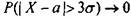
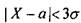
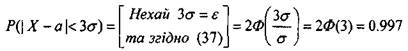
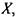
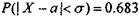
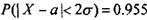
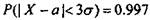
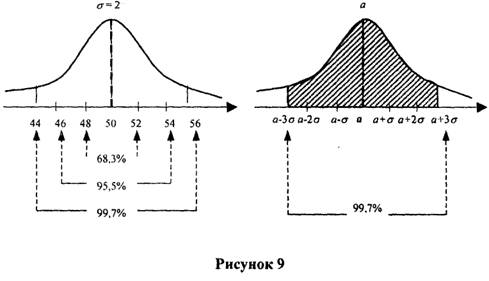

Нормальний розподіл і
правило "трьох сигм"
Якщо X - нормально розподілена випадкова величина, тоді

, але це означає, що

буде достовірною подією. Отже,

Правило "трьох сигм"
стверджує, що незважаючи на величину математичного
сподівання та середньоквадратичного відхилення нормально розподіленої випадкової величини

ймовірність, що значення величини X відхиляється
від математичного сподівання на величину, що
1)
не перевищує одне середньоквадратичне відхилення, дорівнює 68,3%, тобто

,
2)
не перевищує два середньоквадратичних відхилення, дорівнює 95,5%, тобто

,
3) не перевищує три середньоквадратичних відхилення, дорівнює 99,7%, тобто

(38)
Рисунок 9 ілюструє правило "трьох сигм".
